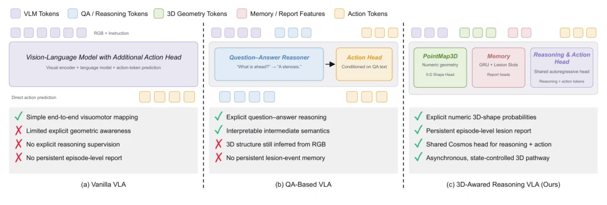
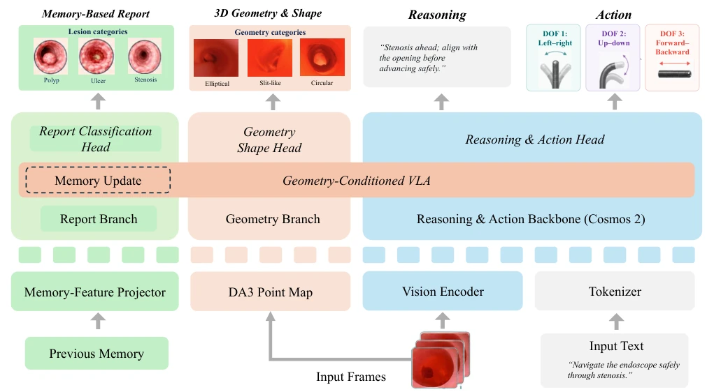
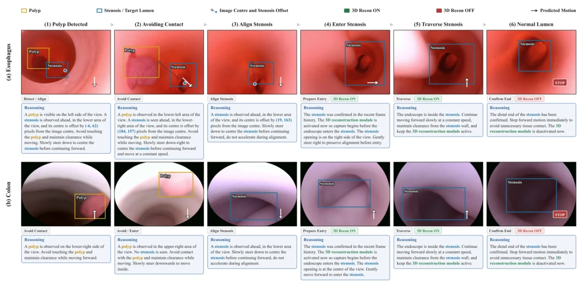
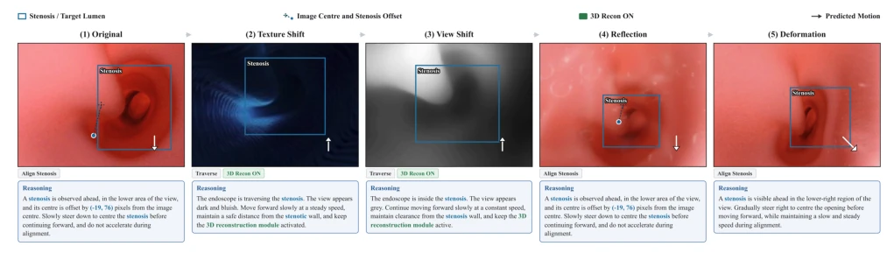

This StenoVLA-3D adds "3D glasses" and a "memory chip" to endoscopic navigation, attempting to solve the problem of getting lost in narrow passages. Although it achieved nearly 90% success rate on phantoms, significantly better than EndoVLA [3], inference takes 25 seconds, and this speed in the emergency room might not even keep up with the patient's breathing. Moreover, it was only tested on phantoms, the complexity of real clinical scenarios and bleeding interference have not yet been verified. However, incorporating point cloud geometry and persistent memory into VLA is a smart move, at least letting the robot know "where that polyp was just now", instead of forgetting after seeing it. This design is very sexy theoretically, but engineering implementation depends on latency optimization, after all, robots cannot think while looking like humans.
Gastrointestinal narrow navigation is difficult due to poor field of view and complex geometric structures. Existing VLAs such as EndoVLA [3] mainly rely on texture, lacking geometric grounding, and cannot retain evidence after the lesion leaves the field of view. General VLAs like π0.5 [4] can generate actions, but do not understand endoscopic-specific anatomical relationships. Clinical guidelines [1] emphasize preoperative assessment of narrow location, length, and diameter, which requires the model to possess 3D perception and long-term memory capabilities. Visual tracking alone is insufficient, requiring combination of geometric reconstruction and state memory to safely traverse narrow segments. Existing methods have obvious shortcomings in episode-level report generation, unable to support the complete evidence chain required for clinical decision-making, leading to doctors being unable to obtain coherent lesion records.

Fig. 1: Comparison of different VLA paradigms. Our 3D-aware reasoning VLA integrates explicit 3D geometry and persistent lesion memory, facilitating the VLA for stronger reasoning and action prediction.
方法Method
框架基于 Cosmos-Reason 2 骨干，输入图像和指令。创新点在于三点：1) 3D 几何编码：用 DA3 生成点地图，通过门控融合注入到 VLA 最后层，不破坏预训练结构；2) 双重记忆：时序记忆用 GRU 更新状态，持久记忆用 slot 机制记录息肉/溃疡/狭窄的存在，即使离开视野也不丢失；3) 多任务头：共享 Reasoning & Action 头生成动作，专用头预测形状和生成报告。推理时根据导航状态异步触发 3D 重建，平衡计算负载。几何特征通过 gated residual 方式融合，确保语言模型能利用 3D 上下文而不需额外 token。训练分两阶段，先微调 LoRA 再优化重建控制，确保动作与几何感知对齐。
The framework is based on the Cosmos-Reason 2 backbone, inputting images and instructions. Innovations lie in three points: 1) 3D geometric encoding: using DA3 to generate point maps, injected into the VLA last layer via gated fusion, not breaking pre-trained structure; 2) Dual memory: temporal memory uses GRU to update state, persistent memory uses slot mechanism to record existence of polyps/ulcers/narrowing, not lost even if leaving field of view; 3) Multi-task head: shared Reasoning & Action head generates actions, dedicated head predicts shape and generates report. During inference, 3D reconstruction is triggered asynchronously based on navigation state, balancing computational load. Geometric features are fused via gated residual manner, ensuring language model can utilize 3D context without extra tokens. Training is divided into two stages, first fine-tuning LoRA then optimizing reconstruction control, ensuring action and geometric perception alignment.

Fig. 2: Overview of the proposed 3D-aware reasoning VLA. The framework fuses persistent state memory, DA3-derived 3D geometry, visual observations, and language instructions through geometry-conditioned VLA. Specialized heads predict reports and geometric shapes, while the shared Cosmos-Reason2 [16] backbone generates semantic reasoning and 3-DoF actions.
Used self-built EndoCausal dataset (400 phantom sequences). Baseline compared EndoVLA* and π0.5. On 40 test sequences, semantic accuracy 95.2%, action accuracy 83.4%. In physical robot tests, esophagus and colon phantom success rates reached 88.9% and 77.8%, significantly better than baseline. Ablation experiments show, removing persistent memory or geometric fusion, task success rate directly goes to zero, proving 3D information and memory crucial for closed-loop navigation. Zero-shot tests indicate model has certain robustness to texture and viewpoint changes, but performance drops under deformation. Overall, 3D perception is key to improving navigation success rate, while memory mechanism ensures report completeness.

Fig. 3: Qualitative reasoning traces of StenoVLA-3D on esophagus (a) and colon (b) sequences. Columns (1)–(6) follow polyp detection, contact avoidance, stenosis alignment, reconstruction-gated entry, traversal, and distal-end stop. Yellow boxes mark polyps. Cyan boxes mark the stenosis or target lumen. Green/red badges indicate whether 3D reconstruction is active.

Fig. 4: Zero-shot qualitative results of StenoVLA-3D. Column (1) is the unperturbed view; (2)–(5) show texture shift, view shift, reflection, and deformation. Cyan boxes mark the stenosis or target lumen. The model retains consistent reasoning and navigation under these appearance and geometry changes.